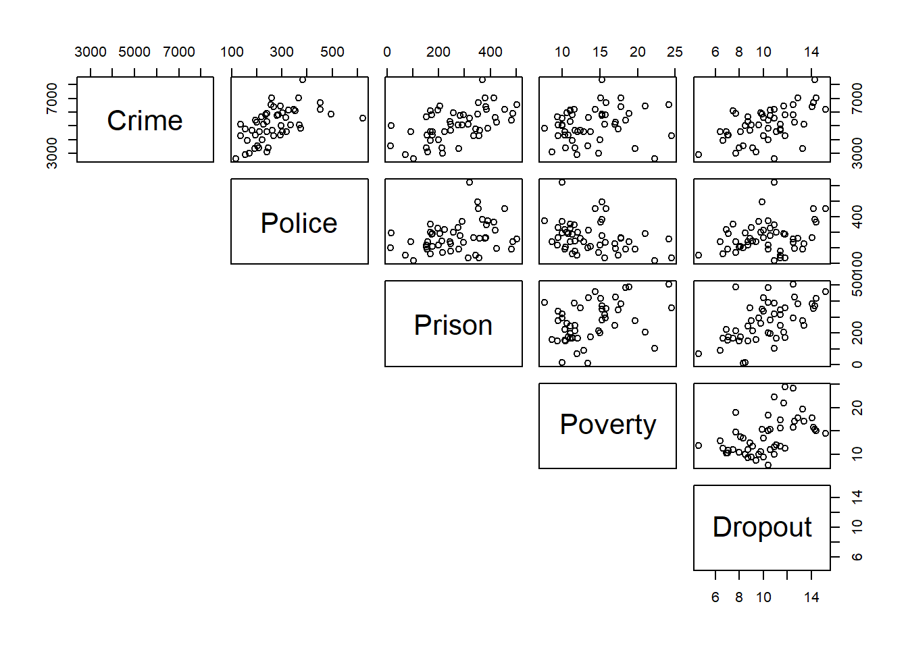

2 Examples
2.1 Example 1 - crime dataset
- Use
pairsto visualise the data and determine which predictors may be useful in predicting Crime.
The R command pairs() may be used to see the relationships between all variables.
crime <- read.csv("crime.csv")
pairs(crime[,-1], lower.panel = NULL)
# We add [,-1] to the end of crime to remove the first column which has non-numeric arguments (state names)- Build a simple linear regression model against
Dropoutand interpret estimated coefficients.
According to the model, when Dropout is equal to 0, Crime would be roughly . For each 1 unit increase in the Dropout variable, Crime would go up by roughly (to 4 decimal places).
model1 <- lm(Crime ~ Dropout, data = crime)
coef(model1)## (Intercept) Dropout
## 2196.5435 281.7613- Calculate the least squares estimates of model parameters using the vector-matrix formulation.
The following R commands will come in uesful:
model.matrix # returns the design matrix
t # gets the transpose of a vector or matrix
%*% # multiplies matrices together
solve # computes the inverse of a matrix
Recall the least squares estimate of the model parameters in terms of vector-matrix notation is given by
\[\begin{equation} \hat{\beta}=(X^{T}X)^{-1}X^{T}Y \tag{1.1} \end{equation}\]
X <- model.matrix(~ Dropout, data = crime)
XtX <- t(X) %*% X
# The inverse of XtX can be found by using solve(XtX)
Y <- crime$Crime
XtY <- t(X) %*% Y
beta.hat <- solve(XtX) %*% XtY
beta.hat## [,1]
## (Intercept) 2196.5435
## Dropout 281.7613- Check this is same as the results computed using the summation notation (discussed in Practical 1).
Recall that the equations for the least square estimates using the summation notation are
\[\begin{equation} \hat{\beta}_0= \overline{Y}-\hat{\beta}_1 \overline{x} \tag{2.1} \end{equation}\]
and
\[\begin{equation} \hat{\beta}_1= \frac{\sum^n_{i=1}(x_i-\overline{x})(Y_i-\overline{Y})}{\sum^n_{i=1}(x_i-\overline{x})^2} \tag{2.2} \end{equation}\]
Y <- crime$Crime
x <- crime$Dropout
b1 <- sum((x - mean(x)) * (Y - mean(Y)))/sum((x - mean(x))^2)
b0 <- mean(Y) - b1 * mean(x)- Use 1 or more predictors alongside Dropout to build a multiple linear regression model for explaining Crime.
Use the graph found using the pairs() command in a) to select predictors that appear suitable for describing Crime.
Recall that a multiple linear regression model can be constructed using
model <- lm(Crime ~ Dropout + Predictor1 + Predictor2 + ..., data = crime)
- Calculate the least squares estimates of parameters using the vector-matrix formulation in the new multiple linear regression model.
The same steps can be followed as in c), but the design matrix X has to be updated accordingly. Say we want to add Police and Prison variables to our model. We would then use the following code.
X <- model.matrix(~ Dropout + Police + Prison, data = crime)
XtX <- t(X) %*% X
# The inverse of XtX can be found by using solve(XtX)
Y <- crime$Crime
XtY <- t(X) %*% Y
beta.hat <- solve(XtX) %*% XtY
beta.hat## [,1]
## (Intercept) 1513.317509
## Dropout 148.343452
## Police 4.782505
## Prison 2.7945142.2 Example 2 - phys dataset
Recall Example 1 from Practical 1 in which volunteers had their power output (in watts), weight, and leg length measurements recorded. Here we would like to assess the strength of the relationship, if any, between Power Output and Weight, which we explored in scatterplots in the previous practical, displayed in Figure 1. We are going to do this for male and female volunteers separately, such that we assess the statistical significance of the observed correlation between these two variables in the wider populations of (i) males and (ii) females.
Figure 2.1: Scatterplot of Power Output versus Weight.
Firstly, we subset the data for males and females. One way to do this is:
physM <- subset(phys, Gender == "Male", data = phys)
physF <- subset(phys, Gender == "Female", data = phys)
We now perform, separately for males and females, the following hypothesis test:
We test the null hypothesis, \(H_0\), that is, that in the population of males/females the correlation between Power Output and Weight is 0 against the alternative hypothesis, \(H_1\), that the correlation is not equal to 0.
To compute the sample correlation coefficient, \(r\), and perform our hypothesis test, we use the cor.test
command. For the males data, the command is as follows:
cor.test(physM$Power1, physM$Weight)
Note: in the cor.test command the $ notation is required to access the variables from the subsetted data.
The hypothesis test produces a p-value, where we reject the null hypothesis, \(H_0\), for small values of the p-value (typically p-values < 0.05). It also produces a 95% confidence interval for a range of plausible values for the true population correlation.
What is the sample correlation coefficient for the males data? (to 4 decimal places)
What is the p-value for the test? (to 6 decimal places)
The sample correlation coefficient tells us that Power Output and Weight have a , relationship.
Based on the p-value of the test, we would .
Perform the same test on the Female data.
What is the sample correlation coefficient for the females data? (to 4 decimal places)
What is the p-value for the test? (to 4 decimal places)
The sample correlation coefficient tells us that Power Output and Weight have a , relationship.
Based on the p-value of the test, we would .
Note: if we do not subset the data by gender, we obtain a sample correlation coefficient \(r = 0.89\), with a p-value \(\lt\) 0.05, and thus we would conclude that there is a strong, positive linear relationship between Power Output and Weight. However, we now know that is not the case for females.
2.3 Calculating the correlation by hand
To compute the sample correlation coefficient, r, the command cor.test uses the formula given in (1.2). To check that the cor.test command is ‘correct’, we can ourselves calculate the correlation directly using the following commands:
var # computes the variance of a given vector
cov # computes the covariance between the vectors x and y
sum # returns the sum of the values given
mean # computes the mean of a given vector
sqrt # computes the square-root of a given vector
Give your answers to 3 decimal places where required.
- Using the commands
varandcov, compute the variance and covariance given in (1.1) for the males data, where Y denotes the response variable Power Output, and X denotes the explanatory variable Weight.
The variance of the explanatory variable Weight is . The variance of the response variable Power Output is . The covariance of the response and explanatory variables is .
X <- physM$Weight
Y <- physM$Power1
var(X)## [1] 47.37381var(Y)## [1] 25435.39cov(X, Y)## [1] 893.1468- Using the variance and covariance obtained in (a), and the square-root command,
sqrt, compute the sample correlation coefficient using the formula given in (1.1) for the males data. Does this match what was obtained using thecor.testcommand?
The sample correlation coefficient using the variance and covariance obtained in (a) is .
This the sample correlation coefficient found using cor.test.
cov(X, Y)/sqrt(var(X)*var(Y))## [1] 0.8136441cor.test(physM$Weight, physM$Power1)$estimate## cor
## 0.8136441- Use the
mean,sum, andsqrtcommands to compute the sum of squares, \(S_{xx}\) and \(S_{yy}\), and the sum of products, \(S_{xy}\), given in formula (1.2) for the males data.
Give your answers to 3 decimal places where required.
\(S_{xx}\):
\(S_{yy}\):
\(S_{xy}\):
Sxx <- sum((X-mean(X))^2)
Syy <- sum((Y-mean(Y))^2)
Sxy <- sum((X-mean(x))*(Y-mean(Y)))
c(Sxx, Syy, Sxy)## [1] 663.2333 356095.4916 12504.0557- Use the sum of squares and sum of products obtained in (c) to compute the sample correlation coefficient, \(r\), using formula (1.2) for the males data. Does this match your answers from (b) and the
cor.testcommand?
The sample correlation coefficient found using the sum of squares and sum of products above is , which is as the value found when using cor.test.
Sxy/sqrt(Sxx*Syy)## [1] 0.8136441